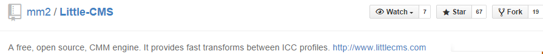
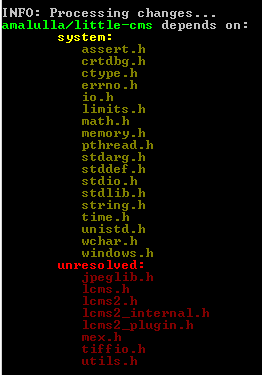

Updated for biicode 2.0!
Once a library is uploaded to biicode, everyone can reuse it easily! Let’s see a new example about how to upload to biicode just following a few steps, again, this is another example about how to proceed when your library depends on others. For this matter we’re using the fantastic library Little CMS, a free, open source, CMM engine. It provides fast transforms between ICC profiles.
As you can guess, once we’re done everybody will be able to use this library just by typing #include "martimaria/littlecms/include/lcms2.h"
The Initial Steps to upload to biicode: one, two, three, four!
These don’t defer from the ones used on the previous examples last week: Json11 and Box2D.
1. Install biicode in your computer.
2. Fork original repository (OPTIONAL)
If the library is available on Github or another public git repository, it’s a good practice to fork the repository so if the author updates the library we can merge them to our “biicode compatible” library easily. For this step, go to the original repository and click on fork:

3. Init a new biicode project and create a new block
Easy-peasy, just like this:
1 2 3 | $ bii init lcms $ cd lcms $ bii new amalulla/little-cms |
If you already are a biicode user you can replace “amalulla” with your username so you can publish your code when you finish this tutorial.
Now copy the source code into blocks/amalulla/little-cms folder or execute git clone into it (if you forked the original repository):
1 2 | $ cd blocks\amalulla\little-cms $ git clone https://github.com/amalulla/Little-CMS.git . |
4. Check if biicode has found the relationships between your source code
It’s important that biicode locates all the #includes in your source code and the files that these includes point to.
Command bii deps give us all the information we need to know about the “dependency scanning” of biicode in our project:
1 | $ bii deps |

What’s going on? Seems we have tons of unresolved files, How should we proceed with those in order to get the library working?
4. Solve your Unresolved includes
4.1. #include External Libraries
Let’s start with the ones we already new about: jpeglib.h and tiffio.h, they are the dependencies, as Marti Maria explains in the library Docs:
If you plan to compile the tifficc and jpgicc utilities, you need to have following libraries installed. Please refer to documentation of each library for installation instructions.
Well, that’s not our case, in biicode you don’t need to install nor download the libraries, so, we’re going to look for them in biicode:
Lets check, they’re already in biicode!
- tiffio.h → Lib TIFF http://www.remotesensing.org/libtiff/ → http://www.biicode.com/tiff/tiff → tiffio.h
- jpeglib.h → Independent JPEG Group http://www.ijg.org/ → http://www.biicode.com/jpeg/jpeg → jpeglib.h
UPDATE: They’ve been already uploaded to biicode so we’ll change the includes in the library into the includes biicode needs to recognize them map the right includes in our biicode.conf file, just like this:
- #
include “tiffio.h” → replace for #include “tiff/tiff/libtiff/tiffio.h” #include “jpeglib.h” → replace for #include “jpeg/jpeg/jpeglib.h”
1 2 3 | [includes] jpeglib.h: jpeg/jpeg tiffio.h: tiff/tiff/libtiff |
Check our reference section in the docs to read more aboout [includes].
How do we know the required include?
Just get into the URL of the required file, like this:
Once we’ve updated the #include routes, execute bii find command to retrieve the dependencies:
1 | $ bii find //to retrieve the dependencies |
So if we execute bii deps again:
1 | $ bii deps |
Now that external libraries are included we’ve got to address what’s going on with the other “not found” includes, let’s build the project to see exactly what’s going on and which includes it cannot find.
1 | $ bii build |
It doesn’t build, so it seems we still have a couple things to solve.
4.2. #include internal folders
In your biicode.conf , placed into blocks/username/blockname/bii folder, write into its [paths] section:
1 2 3 | /src /include /utils/common |
Execute bii deps command again to check how’s our adaptation going:
1 | $ bii deps |
4.3. There’s still some #include (s) biicode can not resolve, what’s going on here?
4.3.1 #include “mex.h”
First of all we’ve got to check which files use #include “mex.h” , it’s icctrans.c located into: lcms\blocks\amalulla\littlecms\utils\matlab\icctrans.c
It seems it’s something related with matlab, but just in case we’re going to google #include "mex.h", and we ensure it, this is a feature related to Matlab functionality, and as we’re not using that functionality we’re going to ignore the whole matlab folder. Notice that if you want to use matlab locally you have to link it. But that’s another post’s issue.
4.3.2 #include “lcms.h”
Let’s check which files use #include “lcms.h”, that’s an include referred to a previous Little-CMS version. There are currently four files that use that include, they are located into utils/samples, we’re also going to ignore those, because they won’t work with the new version, the examples I’m referring to are: mkgrayer.c, itufax.c, mkcmy.c and wtpt.c
43.3. testbed folder
Finally we’re also ignoring the whole testbed folder, as it usually contains experimental features, that’s the dev/development environment.
So let’s create a ignore.bii file and write this into it:
1 2 3 4 5 6 | testbed/* utils/samples/mkgrayer.c utils/samples/itufax.c utils/samples/mkcmy.c utils/samples/wtpt.c utils/matlab/* |
Execute bii deps command again:
1 | $ bii deps |
Now there are no unresolved #include(s) so let’s build to check if everything is working properly:
1 | $ bii build |
And it properly builds the library, so get into your bin folder and execute any of the examples created to check it out, for example:
1 2 | $ cd bin bin/~$ amalulla_littlecms_utils_samples_mktiff8.exe |
And you should see a new file called lcmstiff8.icm created and this output on your terminal:
1 | $ Creating lcmstiff8.icm...Done. |
And we’re ready to go!
Don’t forget to publish your library once you’re done! That way everybody can reuse easily from your library!
1 | $ bii publish |
Want to check if the library we’ve just uploaded is truly reusable? Try making your own example and reuse from it!
Related Posts
Pingback: How to upload to biicode Oscpack | biicode Blog()